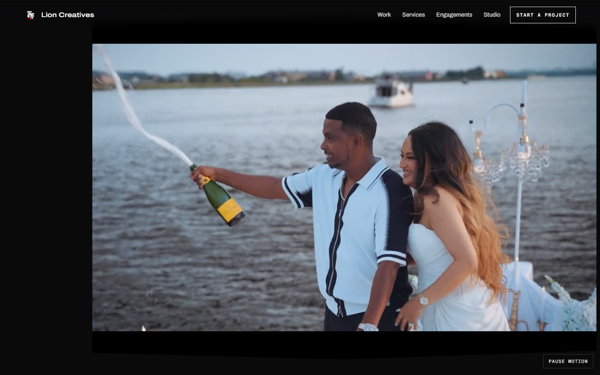
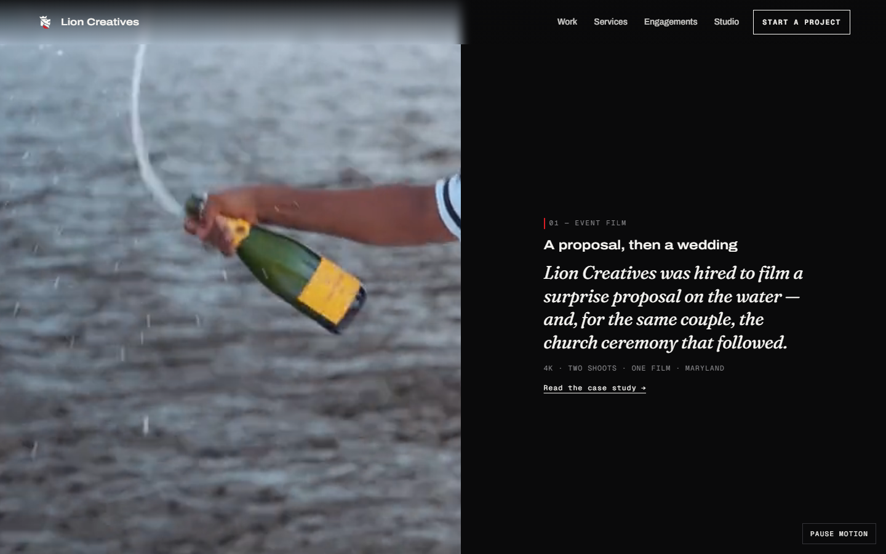
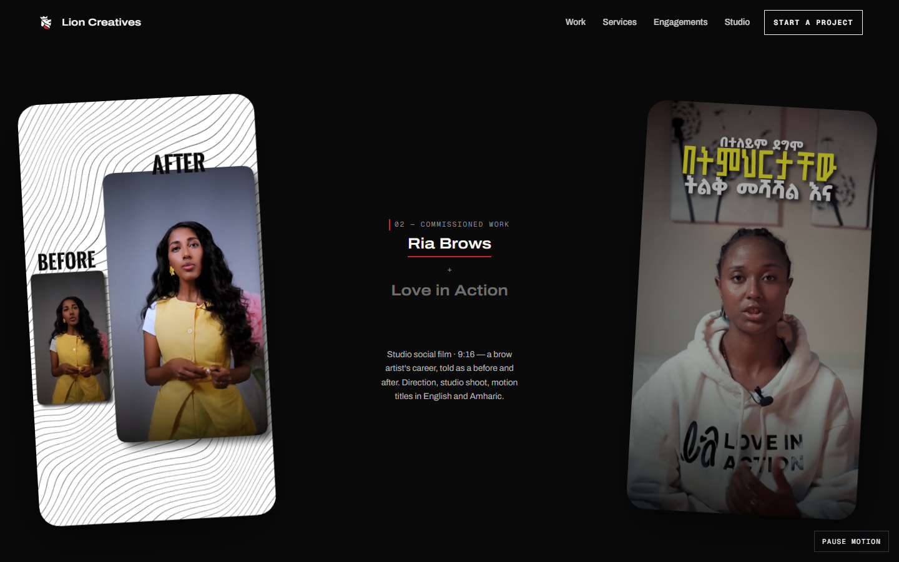
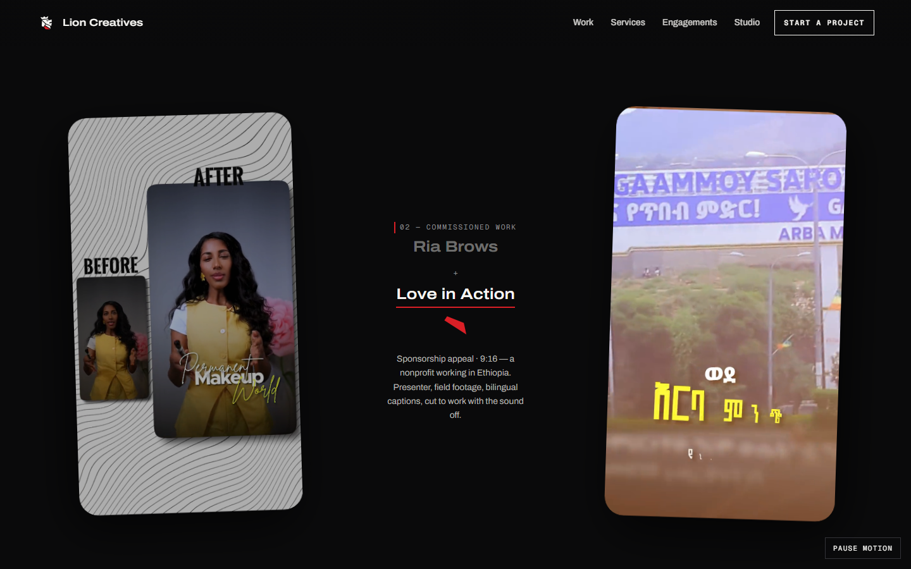
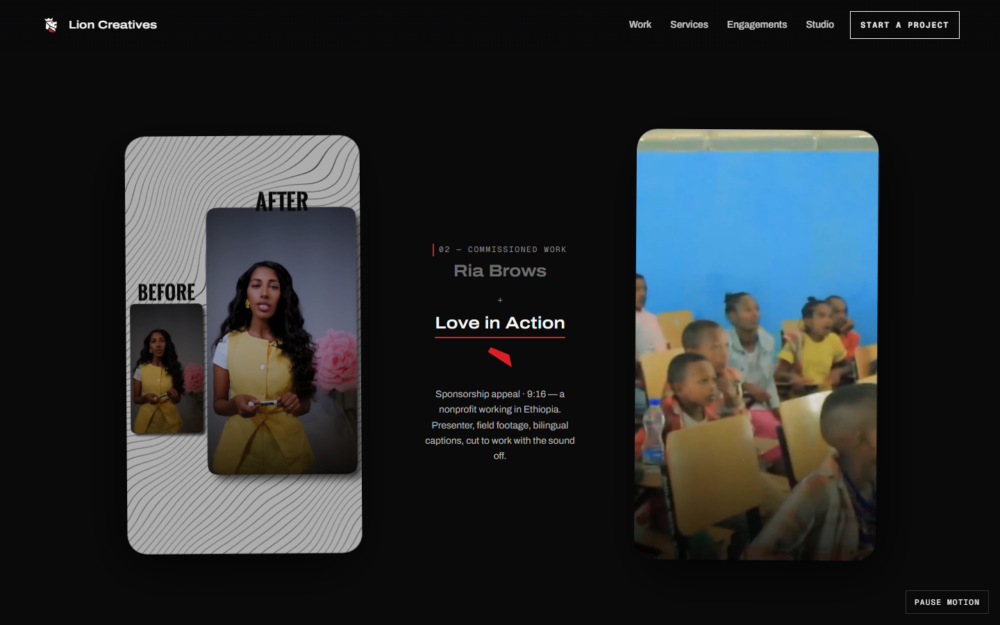
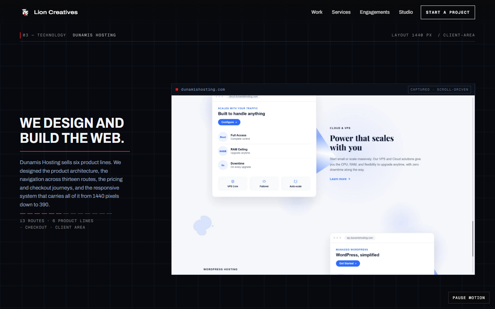
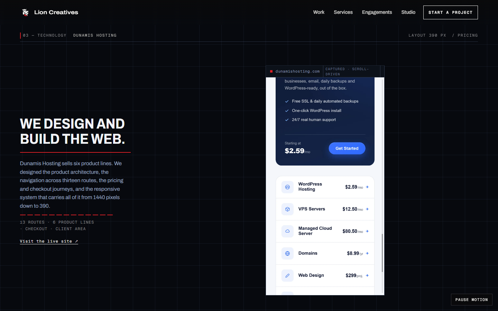
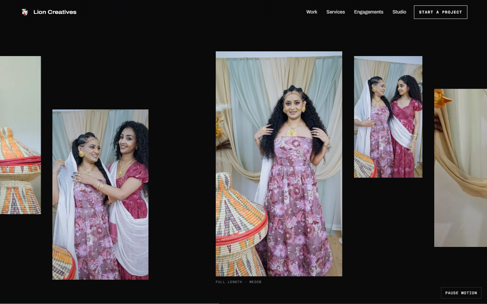
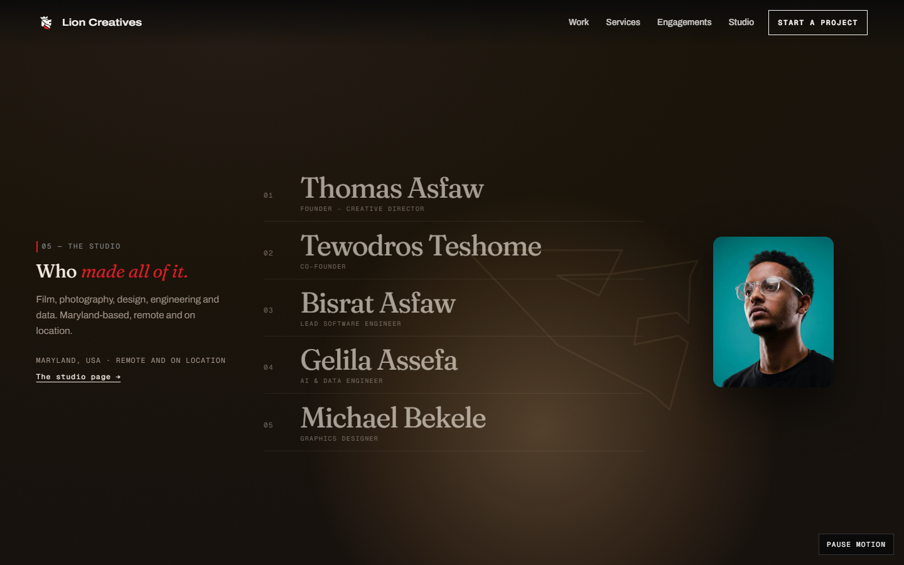
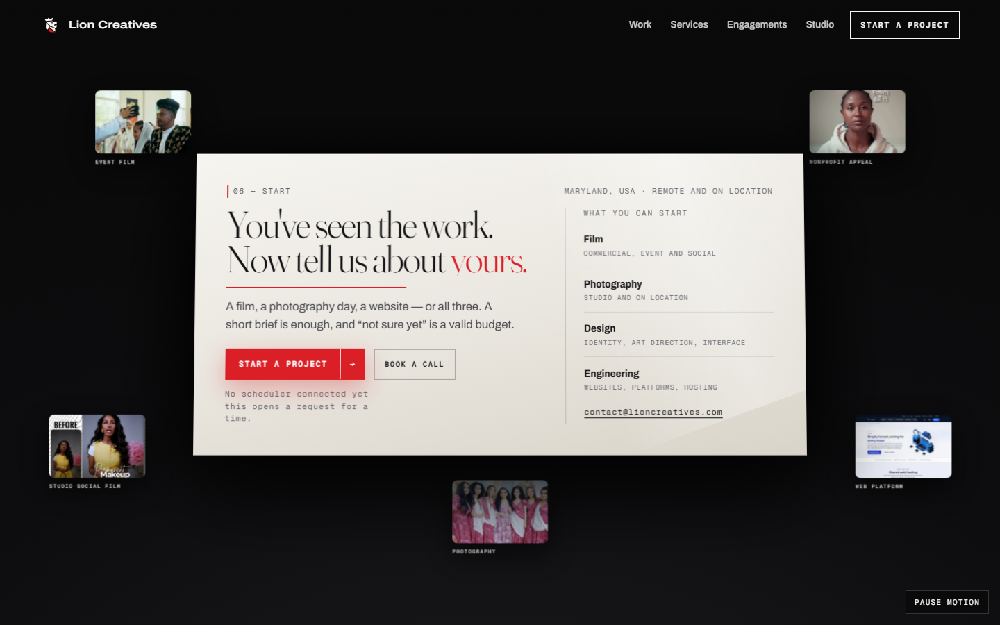

Fourteen deliberate desktop states at 1440×900, one for each item in the founder’s §44 regression set. Every frame is a real capture of the build being reviewed, taken at a named scroll position. None is a mockup.
The founder’s §26: the live typography did not match the approved artifact. It does now, and the cause was not the font service. font-variation-settings inherits, and it beats font-weight. The Archivo line sits inside an h1 that declares Fraunces at ‘wght’ 300, so it computed weight 800 and rendered at 300. One reset fixed it. The supporting paragraph and its red rule are §29.
hero p .02 · 1440×900
BHero — full-screen film
State: hero p .30
§30 state two. The aperture opens to the full width and the film plays at its native 2.22:1. It is letterboxed rather than cropped to fill: the source is 1600×720, so full width at 1440 is a 0.9× downscale — sharp, and no part of the frame is cut away.

hero p .30 · 1440×900
CHero — film left, project story right
State: hero p .90
§30 state three. The film settles into the left column and the event-film story sets on the right. The copy is withheld until the film has physically cleared the column, so no state puts type over a face and no state leaves half the viewport empty.

hero p .90 · 1440×900
DReels — arrival
State: commercial p .20
Approved motion, unchanged (§32). Throw, tilt and knee are the measured reference values, not a preset.

commercial p .20 · 1440×900
EReels — focus handoff
State: commercial p .55
The two-act beat: the lit reel hands off to the other at the midpoint. Rounded corners preserved, and the radius scales with the frame.

commercial p .55 · 1440×900
FReels — settled pose
State: commercial p .90
The settled pair, just before the bridge into Dunamis. Radius is proportional to reel height, so the frames never read as UI cards.

commercial p .90 · 1440×900
GDunamis — opens at its real hero
State: tech p .05
§31: the sequence now starts at the actual homepage hero, the globe, instead of partway down the page. Aspect integrity holds — uniform scale, no stretch. The readout at the top right was being clipped by the viewport edge; that is fixed here too.
tech p .05 · 1440×900
HDunamis — product architecture
State: tech p .55
The captured site is translated by the page’s own scroll. One scroll authority, so there is no nested scroller and no way to be trapped.

tech p .55 · 1440×900
IDunamis — phone reflow
State: tech p .95
The viewport itself narrows to 390 and the layout genuinely reflows. Not a device mockup, and not a tall screenshot stretched to fit.

tech p .95 · 1440×900
JPhotography — horizontal gallery
State: photo p .45
The horizontal travel the founder asked to keep (§33), across eleven frames re-exported from 2400px originals.

photo p .45 · 1440×900
KPhotography — full-screen group payoff
State: photo p .96
§33: the sequence now builds to a full-screen group frame. The caption sits lower-left on its own scrim, clear of every face, and the photograph keeps its natural colour.
photo p .96 · 1440×900
LThe Studio
State: studio p .75
§34 and §36. A credit roll, with the portrait of whoever is currently named: one frame size, one corner radius, natural colour, cropped never stretched. All five portraits are real files now — none is a placeholder or an initials treatment.

studio p .75 · 1440×900
MSection 06 — The Table
State: engage p .88
§37, rebuilt again. The lit plane stands in a dark room, and its right half now carries the four disciplines instead of bare cream — that empty field was the thing being rejected. The five projects hold a ring outside the plane rather than sliding underneath it, so every frame and every label stays whole.

engage p .88 · 1440×900
NFinale
State: finale p .99
§38. Horizon, receding plane grid, red halo and a contact shadow under the mark. The closing line, the gate and the imprint all land. The contact address in this block was invisible until this build — see the note below.
finale p .99 · 1440×900
+Three defects this pass found that no screenshot would have shown
Every duplicated animation cue was silently invisible. The scroll engine revealed beats with
querySelector — singular. Where a cue name was used on more than one element, only the first ever became visible; the rest stayed at
the stylesheet default of opacity: 0. Four elements were affected, and two of them were content the founder had specifically asked for:
the contact address in the finale and the link through to the studio page. The engine now reveals every matching element.
A right-edge clip in the Dunamis header. An absolutely positioned element also carried the page’s
.wrap class, whose width: 100% overrides the left/right pair. The row finished 58px past the
viewport and its readout was cut off by the scene’s overflow: clip.
Focus went nowhere when the mobile menu closed, in Safari. The menu restored focus to whatever had been focused when it
opened — but WebKit does not focus a button on click, so that was the document body. A keyboard user lost their place entirely. It now returns
focus to the trigger.
The suite runs green in Chromium, Firefox and WebKit. Two of those tests were themselves wrong and were corrected rather than worked
around: the font-integrity probe compared a monospace face against a monospace fallback, which ties by definition and reported a loaded font as
missing; and the focus check above was a real bug in the page, not in the test.